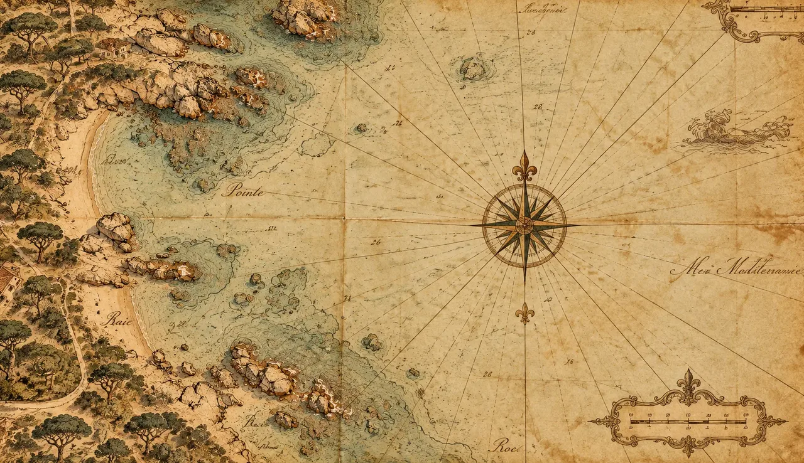
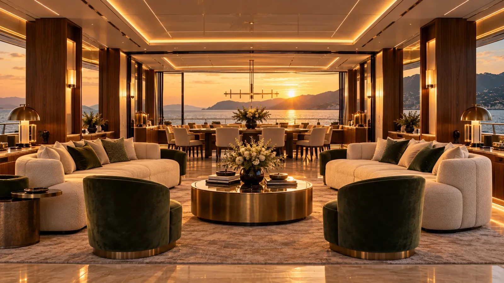
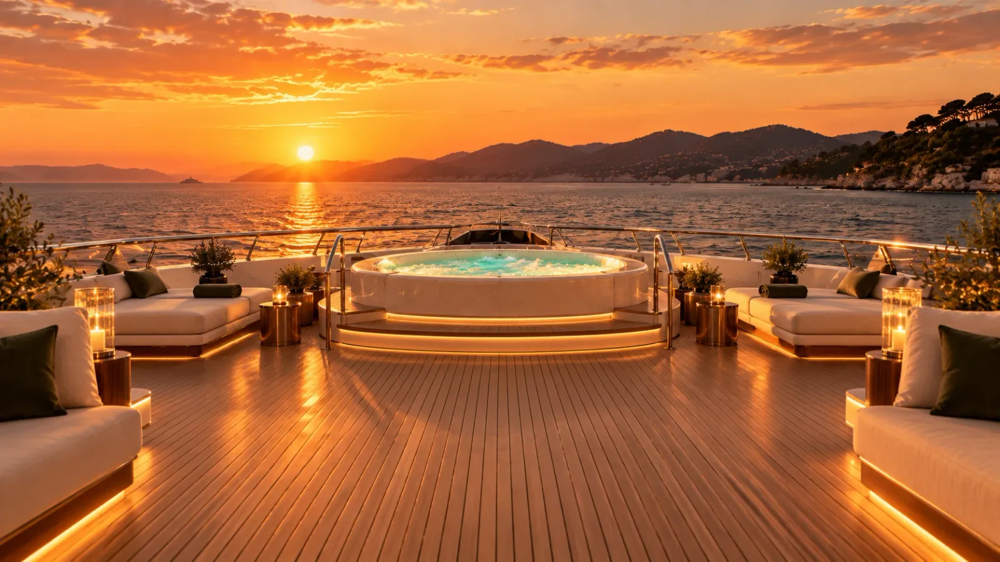
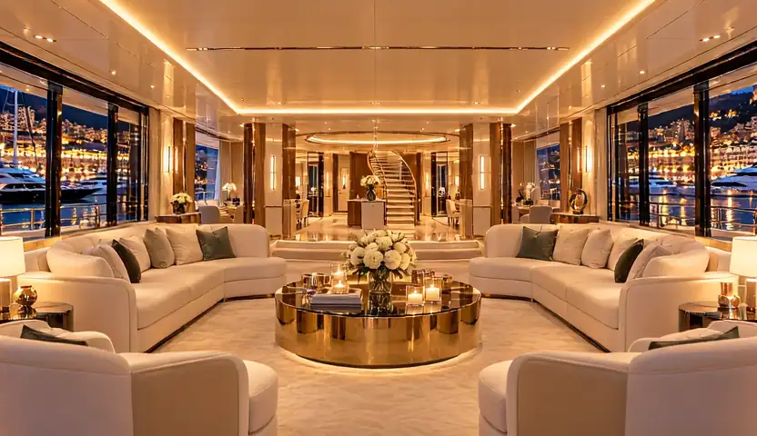

Courtier en yachts sur la Côte d'Azur
Yachts à vendre et à louer, de Saint‑Tropez à Monaco
Chaque traversée commence sur une carte. Faites défiler pour embarquer.
Maquette · Lot 1
Tout ce que les pages ne montrent pas au premier affichage : les étapes de la visite, les envois de formulaires, l'état vide, le chargement, les plein écrans. Les annotations « MVP » signalent ce qui change par rapport au site actuel.
La séquence est pilotée au défilement : la carte s'ouvre en brûlant depuis le yacht, puis la caméra monte à bord. Les instruments, le repère de progression et le texte changent à chaque étape.
Début · sur la carte

Passer la visite et aller à la flotteCourtier en yachts sur la Côte d'Azur
Chaque traversée commence sur une carte. Faites défiler pour embarquer.
Faire défiler
Milieu · à bord

Le salon, 62 m²
Les baies toute hauteur s'ouvrent sur la mer des deux côtés.
Fin · le pont supérieur

Camarat · 50 m · livré en 2024
À vendre, 42 000 000 €. Ou à louer à la semaine, dès 240 000 €, avec son équipage. Visite à Saint‑Tropez sur rendez‑vous.
Repos, envoi en cours (bouton désactivé), confirmation, erreur. Le message s'affiche sous le champ, en laiton, ou en rose corail pour une erreur.
Repos
Envoi en cours
Confirmation
C'est noté. Nous vous écrirons.
Erreur
Indiquez une adresse e-mail complète.
La vérification anti-robot reste une ligne discrète sous le consentement. Elle ne demande une action que si le doute persiste.
Demande reçue
Merci Claire.
Un courtier vous recontacte sous 24 heures. Un e-mail de confirmation vient de vous être envoyé.
Quand un filtre ne trouve rien, et pendant que la liste arrive de la base.
Filtre « Voiliers » + « À vendre », aucun résultat
Aucun voilier à vendre en ce moment. Nous en suivons hors marché : parlons-en.
Chargement (squelette des planches)
Brochure
Plans, inventaire, historique d'entretien et photographies en haute définition. Envoyée par e-mail, en toute discrétion.

Mistral Blanc Visite à bord
Molette, doigt ou flèches
03 / 06
Le salon
Sous 1100 px, la colonne « En bref » laisse place à cette barre, qui apparaît après l'ouverture.
À louer
À vendre
Visible seulement en mode démonstration (avec), absente sur le site d'un vrai client (sans). Rien d'autre ne change.